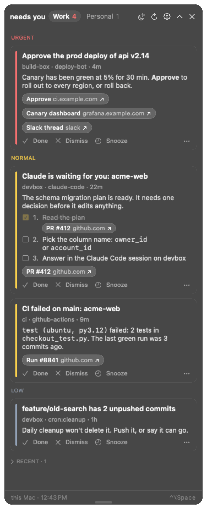
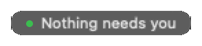
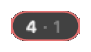
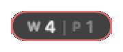
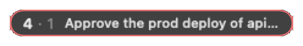
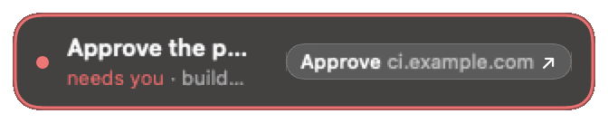
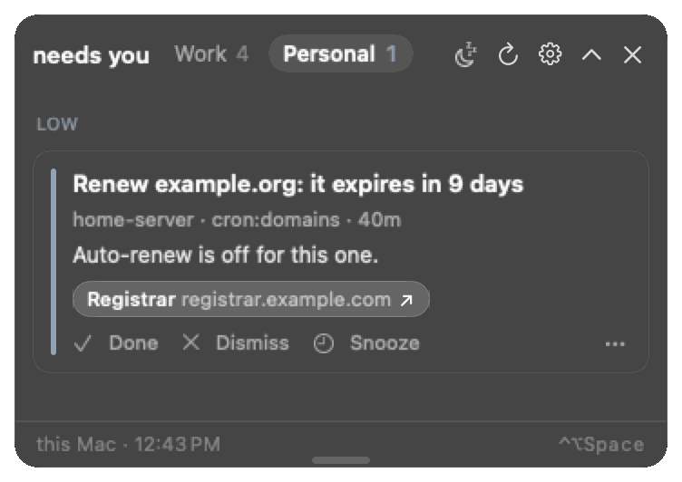
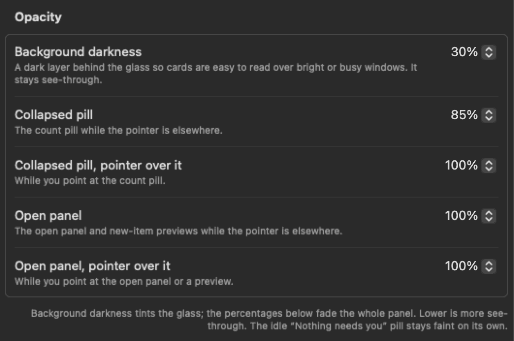
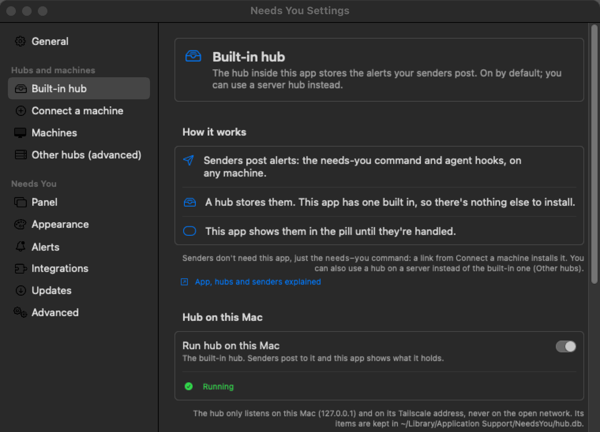
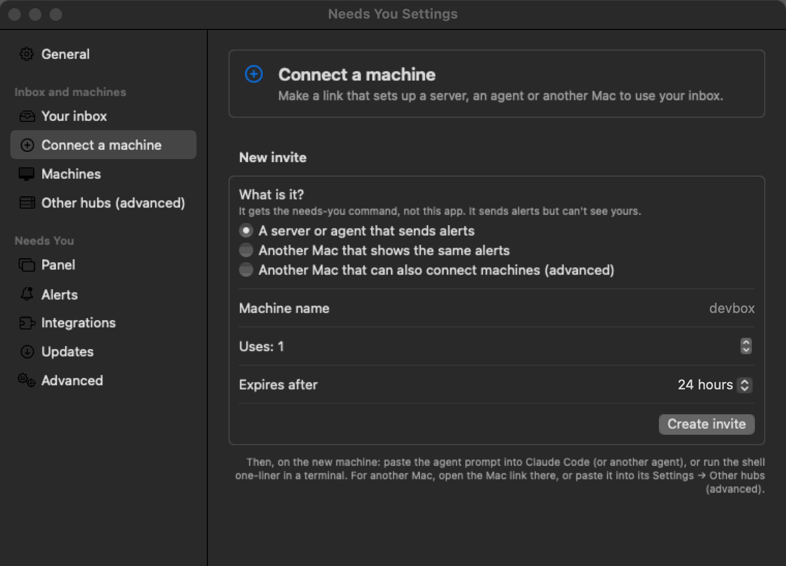

The Mac app
NeedsYou.app is the only thing that shows anything. It's a small floating panel (no Dock icon; an optional menu bar icon) that polls your hubs and stays out of the way until something needs you.
Build, install and signing details live with the code: mac/README.md. This page is the short version for users. New to the words hub, sender and owner? Words explains them in one table.
Install #
- Download
NeedsYou-X.Y.Z.dmg(orNeedsYou-X.Y.Z-macos.zip) from the repository's Releases page, plusSHA256SUMSif you want to check it (shasum -a 256 -c SHA256SUMS), and check its build provenance withgh attestation verify NeedsYou-X.Y.Z.dmg --repo tayharris/needs-you(release-signing.md). Or build it per mac/README.md. - Drag
NeedsYou.appto/Applicationsand open it. It's ad-hoc signed, not notarized, so macOS blocks the first launch once: on macOS 14 and earlier, right-click → Open → Open; on macOS 15 and later, double-click, then System Settings → Privacy & Security → Open Anyway. Or:xattr -dr com.apple.quarantine /Applications/NeedsYou.app. On a managed work Mac, endpoint security (e.g. SentinelOne) may flag ad-hoc signed builds; ask IT. - The built-in hub needs
/usr/bin/python3(Apple's Command Line Tools). If Settings… says Python 3 isn't available on this Mac, runxcode-select --install, then quit and reopen the app. - Optional: Settings… → General → Open at login.
Its own hub #
The app runs a hub itself (hub/needs_you_hub.py with the Mac's /usr/bin/python3, as a child process that exits with the app). It listens on 127.0.0.1:8765, and on the Mac's tailnet address whenever Tailscale is up (there's no separate switch; Settings… → Your inbox shows the URL servers use, next to the 127.0.0.1 one). It provisions its own owner token, so there's nothing to configure. The first time a server connects, macOS may ask whether python3 may accept incoming connections: allow it.
- Connect a machine (right-click the pill → Settings…, or Connect a Machine… in the menu bar menu) makes an invite link plus a prompt to paste into an agent (Add a sender). Machines (the next page in the sidebar) lists every connected machine with its role, CLI version and open items, and the open invite links, with a Revoke button for each (Removing a sender). A sender whose CLI is older than the app, or hasn't reported a version, also has Request update: its next call to the hub asks it to run
needs-you update(by itself with auto-update on, else a once-a-day reminder on that machine); the row then says "Update requested …" with Cancel, and "Up to date" once it has updated (Keeping up to date). - Server hubs (optional, advanced): set one up on a server from the command line (Server hubs; there's no app screen for it), then open a
needsyou://connect?hub=...&code=...link from its owner invite, or paste it into Settings → Other hubs (advanced), and the app adds that hub (its token goes in~/Library/Application Support/NeedsYou/tokens.json, mode 600; nothing is kept in the Keychain) and fails over between hubs.
While the Mac sleeps its hub is offline: senders queue items and deliver them within about 5 minutes of it waking. Always-on server hubs avoid the wait.
The exact settings and how the app passes options to its hub are in mac/README.md.
Using it #

| You see | It means |
|---|---|
| A barely visible pill | Nothing needs you. Hover for "all clear" and the last check time. |
| A pill with a number and a colored ring | Open needs items in the current context. Red = urgent, amber = normal, slate = low. |
3 · 1 | 3 in the current context, 1 waiting in the other (work vs personal). Settings → Panel → Collapsed pill can show them as W 3 | P 1 instead, or split by priority. |
3 +2, a moon | 2 more are waiting under Later; a focus is on (see Focus). |
3 2 new | 2 of the 3 arrived (or changed, or turned into needs) since you last opened the panel. Opening it clears the badge. |
| The pill springs out with a title | A new item just arrived. It stays out 14 s; point at it to keep it there, click it to open the panel. |
The pill when nothing needs you, with 4 work items and 1 personal one waiting (count only, then split work | personal and count and top item), and a new item springing out:





The open panel shows one context at a time; the tab in its header switches (here, Personal):

- Click the pill to expand the cards. A click anywhere else closes it, as do Escape, the chevron, a double-click on the header bar and the shortcut. To keep it up while you read a card next to the page its link opened, turn off Settings → Panel → Open panel → Collapse when clicking elsewhere. If the glass is hard to read over bright windows, raise Settings → Panel → Opacity → Background darkness.
- Drag the open panel's free edge (the bottom, or the top when the panel sits in a bottom corner) to make the card list taller or shorter. It remembers the height; double-click the edge, or Settings → Panel → Open panel → Automatic, to go back to fitting the cards.
- On a card: Done (resolve), Dismiss, or snooze just that card. Links open in the browser or in their app (
orca:,slack:,vscode:,linear:, ...). A Terminal button on an agent's card brings forward the terminal it runs in and marks the card done (Terminal button). - A card with steps shows them as a numbered checklist at your card text size, each step's link as a button. Tick steps off as you go (the ticks stay on this Mac; steps the agent already marked done are ticked for you); once every step is ticked the card offers All steps done: mark Done. With Card text set to First lines or Title only, the card shows "3 steps" until you click it. Choices an older agent hook posted as steps still show this way.
- An agent's question card shows each question under its header ("Database · choose one", or "choose any" when it takes several) and the choices it offered as rows, each with its description below the label. There are no tick boxes. When the agent waits for an answer from the card (opencode does, and any script that posts an answerable question), the choices are buttons: for a single question with one choice, a click sends that answer at once; with several questions or a "choose any" question, click your choices and then Send. Answer in the terminal brings the agent's terminal forward instead (for an answer of your own words). The card then says Sent to the agent, then Answered: …, or why it wasn't taken (another click got there first, the question changed, the agent stopped waiting). Clicking never makes the app active or takes the keyboard from what you're typing in. Otherwise answer in the agent (the Terminal button). With Card text set to First lines or Title only, the card says "Asks: Which database should we use? · 3 choices" until you click it, and the arrival preview shows the question and its first choices.
- A card waiting 4 hours or more shows its age next to the title (
5 h,2 d; amber after 2 days). Its … menu has Dismiss All from <host>, which clears every card and Recent row from that machine in this context, for when a machine went away without resolving its cards. - Right-click the pill (or the button in the expanded header) to snooze everything: 15 min, 30 min, 1 hr, 3 hr, until tomorrow. Urgent items still pulse once through a snooze. What else arrives while snoozed waits under Later (below).
- Control-Option-Space (⌃⌥Space) opens the card list, or collapses it when it's open (a hidden panel comes back open). Double-clicking the open panel's header bar also collapses it. Change it in Settings → Panel → Keyboard.
- Drag the pill anywhere; it stays where you drop it (or snaps to a corner with Snap to corners) and remembers the spot per display setup. Reset Position in the right-click menu puts it back top right.
Setup tips #
While something isn't set up yet, the open panel shows a setup tip: a card like any other, from Needs You setup, with a button and a link to the guide. The idle pill says so (Nothing needs you · 1 setup tip).
| Tip | Shows when | Button |
|---|---|---|
| Turn on the hub on this Mac | Run hub on this Mac is off and no other hub is set up | Open Settings (Your inbox) |
| Connect your first agent or machine | The hub answers, but nothing has ever posted to it and it lists no token besides this Mac's | Copy agent prompt: makes a one-use sender invite (24 hours) and copies the prompt to paste into Claude Code |
| Reach this Mac from your other machines | The hub on this Mac listens on 127.0.0.1 only (no Tailscale) and you have server hubs or cards from other machines | Open Settings, and the Tailscale guide |
| Install the Claude Code hooks on this Mac | ~/.claude exists but ~/.claude/settings.json doesn't use the needs-you hook, after the first sender connected | Copy agent prompt, and the Claude Code guide |
Setup tips stay on this Mac: they're never sent to a hub, never count in the pill or the menu bar, never spring out or pulse, and aren't in the menu bar menu or the shortcut's "top card". A tip goes for good once its condition is met (turning the hub off later doesn't bring the first one back), or when you click Dismiss. Settings → Panel → Setup tips turns them off and has Show Again for dismissed ones. The card only says the prompt was copied; the invite link is only on the clipboard (and in Settings → Invite a machine, which shows the invite it made). While no hub is set up at all, clicking the Set up Needs You pill opens the panel with the first tip (with tips off, it opens Settings as before).
Focus: heads-down, except what you choose #
Every new item arrives one of three ways:
| Tier | What you see | In the count |
|---|---|---|
| Interrupt | The pill springs out with the title and a glow (urgent pulses twice) | Yes |
| Ambient | The count and ring change, with one soft glow | Yes |
| Later | Nothing. It waits in a Later section at the bottom of the open panel (a faint +3 on the pill) | No |
With no focus: urgent and normal interrupt, low and done/info are ambient, the other context's items are the faint second number. Right-click the pill or open the menu bar menu → Focus:
| Focus | Interrupts | Waits under Later |
|---|---|---|
| Agents and urgent only | Urgent items, and agent cards (keys starting agent:, which every Claude Code session uses) | Everything else |
| Urgent only | Urgent items | Everything else |
| Everything later | Nothing (only an "Always interrupt" rule) | Everything, urgent too |
Each for 30 min, 1 hr, 2 hr or until tomorrow (7:00). A moon on the pill shows a focus is on; Focus → Off ends it. When a focus or a snooze ends (and when the work day starts), whatever waited comes back in one quiet peek, "3 waited while you were focused", and joins the count. Show now in the Later section brings them back early.
Two guards: an urgent item breaks through a focus unless you turn off Settings → Alerts → Urgent items break through Focus (for a presentation), and a sender that would interrupt more than 6 times in an hour is held to ambient for the rest of it (the open panel says so).
Settings → Alerts → Delivery sets the tier for normal, low, done/info and other-context items, and shows a table of what each focus does. Bypass rules (same tab) override everything, top to bottom, first match wins: match a key prefix (agent:, work:gh:deploy:), a sender agent prefix (orca:, claude-code) or a host (devbox), and choose Always interrupt, Never interrupt (ambient at most) or Always later. A hidden panel stays hidden; bypass never means taking focus.
Drive it from Shortcuts or a script #
The app handles needsyou://focus?level=<level>[&minutes=<n> | &until=tomorrow], with level one of off, agents (agents and urgent only), urgent, later (everything later). Anything else in the link is refused and does nothing.
Any app or web page can open a needsyou:// link, so a focus link is fenced in:
- It asks first. Until you turn on Settings → Alerts → Allow focus links from other apps (Shortcuts, scripts) (off by default), the app asks "Turn on Focus … ?" before applying one.
level=offnever asks: it only makes alerts louder. - It always ends.
minutesis capped at 720 (12 h; larger numbers are cut to 12 h),until=tomorrowends at 7:00, and a link with neither lasts 12 h. - Urgent always gets through. A focus a link set never holds back urgent items, whatever the level or the "Urgent items break through Focus" setting.
- You can see it. The pill shows a small link badge next to the moon, and Focus in the menus has Set by a link · Turn off.
From a script or Terminal, use open -g so nothing comes forward:
open -g 'needsyou://focus?level=urgent&minutes=60'
open -g 'needsyou://focus?level=off'To follow a macOS Focus, first turn on Allow focus links from other apps (otherwise each automation run asks), then make two personal automations in the Shortcuts app → Automation → +:
- When "Work" Focus turns on (any Focus you like) → Run Immediately → action Run Shell Script:
open -g 'needsyou://focus?level=agents'. - When "Work" Focus turns off → Run Shell Script:
open -g 'needsyou://focus?level=off'.
(The Open URLs action works too, but it may bring Needs You forward for a moment; the app hands focus straight back. Run Shell Script with open -g doesn't.)
Make it yours #
Everything is in Settings (right-click the pill → Settings…). The defaults are the original look, except that new items stay out 14 s (was 4 s) and a light dark backdrop sits behind the glass.
| Setting | Where | Choices (default first) |
|---|---|---|
| Size of the pill, the cards' type and the open panel | Panel → Look → Size | Regular, Compact, Large |
| Card body text (agents' step-by-step instructions) | Panel → Look → Card text size | Default, Small, Large, Extra large |
| How much of each card's text shows | Panel → Look → Card text | Full, First lines (3), Title only (click Show details) |
| Links on one short row | Panel → Look → Compact links | Off, On (3 links, +N shows the rest) |
| Cards before the list scrolls | Panel → Look → Cards before scrolling | As many as fit, 2, 3, 5, 8 |
| Close the open panel when you click in another app or open a link | Panel → Open panel → Collapse when clicking elsewhere | On, Off |
| How dark the layer behind the glass is | Panel → Opacity → Background darkness | 30% (default), None, 15%, 45%, 60%, 75% |
| The open panel's list height | Panel → Open panel → List height (drag the panel's edge) | Automatic, or the height you dragged |
| How see-through the collapsed pill and the open panel are | Panel → Opacity: Collapsed pill, Collapsed pill pointer over it, Open panel (also previews), Open panel pointer over it | 100% to 30% (defaults 85%, 100%, 100%, 100%) |
| Size of the collapsed pill only | Panel → Collapsed pill → Pill size | Medium, Small, Large |
| What the collapsed pill says | Panel → Collapsed pill → Shows | Count only; Count and top item (the top card's title, truncated); Minimal dot (a dot in the top priority's colour, the count on hover) |
| How the count is split | Panel → Collapsed pill → Split | None (3 · 1); Work | Personal (W 3 | P 1, the current side brighter); By priority (urgent, normal and low counts in their colours, empty ones hidden) |
The 2 new badge | Panel → Collapsed pill → New since last opened | On, Off |
| Cards about what isn't set up yet (Setup tips) | Panel → Setup tips → Show setup tips | On, Off |
| The global shortcut | Panel → Keyboard | Control-Option-Space (⌃⌥Space), or record your own (it must use Control, Option or Command) |
| The panel's colours | Appearance → Theme | Default (the original dark glass), Match system (Default or Paper with macOS's light or dark), Graphite, Midnight, Paper (light), High contrast (dark or light with macOS), Ocean, Sunset |
| Colour of ticked steps, links in card text and small badges | Appearance → Accent colour | Theme's own, Blue, Purple, Pink, Orange, Green, Teal, Graphite, Custom (any colour; made lighter or darker if it wouldn't read) |
| How loud urgent items are | Alerts → Urgent items | Normal, Off, Subtle, Bright (urgent never goes below Subtle) |
| How loud normal and low items are | Alerts → Normal and low items | Normal, Off, Subtle, Bright |
| How long a new item's preview stays out (also the "3 waited" Later peek) | Alerts → Arrivals → Show new items for | 14 s, 5 s, 10 s, 20 s, 30 s, Until I click or point at it (pointing at it always holds it) |
| How an urgent item arrives on the pill | Alerts → Arrivals → Urgent items arrive with | Glow pulse, Bounce, Shake, Slide in, Ripple (never None) |
| How normal and low items arrive | Alerts → Arrivals → Normal and low items arrive with | Glow pulse, Bounce, Shake, Slide in, Ripple, None |
| How many times the arrival plays | Alerts → Arrivals → Plays | Automatic (urgent twice, others once, one more at Bright), Once, Twice, 3, 5 times (Slide in plays once) |
| How fast it plays | Alerts → Arrivals → Speed | Normal, Slow, Fast |
| Play urgent's arrival again while nobody has looked | Alerts → Arrivals → Remind about unseen urgent items | Off, every 2, 5, 10, 15, 30 min, every hour |
| How normal / low / done and info / other-context items arrive | Alerts → Delivery | Interrupt, Ambient, Ambient, Later (see Focus) |
| Urgent items break through Focus | Alerts → Delivery | On, Off |
| Focus links from other apps apply without asking | Alerts → Delivery | Off (ask), On |
| Bypass rules | Alerts → Bypass rules | None; up to 50 |
| Where new items spring out | Alerts → On the work screen | The pill's display (default), The display you're working on |
| Edge glow | Alerts → On the work screen | Off, Urgent arrivals |
The Panel and Appearance pages show a sample card as you change things, and the Alerts page plays each alert. Alerts → Arrivals → Preview on the pill (Urgent or Normal) plays your choice on the real pill without posting anything; like everything on the pill, it never takes focus. Advanced → Reset to defaults puts the look, theme and alerts back.
Themes #
Every theme keeps urgent red and easy to read: the text, the secondary text and the urgent colour are checked against each theme's background for contrast (WCAG 4.5:1 or better; 7:1 for urgent in High contrast), and urgent stays clearly different from normal and low. Match system and High contrast switch between dark and light glass when macOS does; the others always look the same. Light themes use a light layer behind the glass instead of a dark one, so Background darkness lightens it. High contrast keeps that layer at 60% or more.
Arrival animations #
Glow pulse is the original: the priority colour glows around the pill and fades. Bounce hops the pill up and lets it land, Shake shakes it side to side, Slide in slides it down into place as it fades in (once), and Ripple sends a ring out from its edge. Each moves a few points at most, inside the pill's own margin, and the alert loudness (Off, Subtle, Normal, Bright) still sets how strong it is: Off for normal and low means no animation at all. Urgent can't be set to None or Off; it always moves at least once.
With Reduce Motion on (System Settings → Accessibility → Display), every animation plays as a gentle glow fade instead.
The repeat reminder plays urgent's arrival again every few minutes while an urgent item that came in since you last opened the panel is still open. It stops when you open the panel, and doesn't play while the panel is hidden or snoozed, while a preview is out, or in a focus that holds urgent items.

Terminal button #
Agent cards from the Claude Code hook (and Orca) carry a Terminal button: an app action, not a web link. Clicking it shows you the terminal the session runs in and marks the card done.
| Link | What the app does |
|---|---|
needsyou://orca/terminal?handle=term_… | orca terminal switch, then Orca comes forward |
needsyou://terminal/focus?app=wezterm&pane=<n> | wezterm cli activate-pane --pane-id <n>, then WezTerm comes forward |
needsyou://terminal/focus?app=tmux&pane=<n>[&host=<terminal>] (or target=<session>:<window>.<pane>) | tmux select-window and select-pane, then the terminal tmux runs in comes forward |
needsyou://terminal/focus?app=iterm&session=<UUID> (or tty=/dev/ttys<n>) | Selects that iTerm2 session with AppleScript (opt-in, below), else brings iTerm2 forward |
needsyou://terminal/focus?app=terminal&tty=/dev/ttys<n> | Selects the Terminal tab on that tty with AppleScript (opt-in), else brings Terminal forward |
needsyou://terminal/focus?app=ghostty | Brings Ghostty forward |
iTerm2 and Terminal need Settings → Integrations → Jump to iTerm2 and Terminal tabs (off by default). Turning it on asks macOS for the Automation permission for each app that's running (System Settings → Privacy & Security → Automation lists it); Check again asks again after you open the other one. The panel itself never asks.
What keeps a card from doing more than switching tabs:
- Every link is parsed into a fixed shape: exactly the parameters above, each at most once, each value matching its pattern (digits, a UUID,
/dev/ttysand digits, a tmux session name), none starting with-. Anything else does nothing. - The CLIs run from fixed paths (
/opt/homebrew/bin,/usr/local/bin,/opt/local/bin, the WezTerm app), never fromPATH, with an argument list and a 5 s timeout. No shell. - The AppleScript is fixed text compiled once; the session id or tty is passed to a handler as a typed parameter, never pasted into the script.
- The jump activates the terminal, never Needs You.
- A terminal link opened from outside the app (a web page, a chat message,
open 'needsyou://terminal/…') asks first: Switch to a terminal? The card's own button doesn't ask.
If a CLI switch fails (the pane is gone), the command goes on the clipboard. Logs: Console, subsystem app.needsyou.mac, category terminal-jump. Setting the hook up, including SSH sessions: Claude Code alerts everywhere → Terminal button.
Settings #
Right-click the pill (or the menu bar icon) → Settings…. Settings is a sidebar of short pages, like System Settings. The look, alerts and shortcut are under Make it yours above; the pages:


- General: your name (shown as "needs <name>"), open at login, demo mode. A first-run welcome shows here when no hub is set up.
- Your inbox: three lines on how it works (your machines and agents send alerts, this Mac holds them because it's the hub, the pill shows them), Run hub on this Mac (on by default) and its two addresses, each with Copy: On this Mac (
http://127.0.0.1:8765, for agents on the Mac) and From your other machines (Tailscale) (http://<name>.<tailnet>.ts.net:8765). Without Tailscale it says other machines can't reach the hub and links to the Tailscale guide. - Connect a machine: pick what it is (A server or agent that sends alerts, Another Mac that shows the same alerts, or Another Mac that can also connect machines (advanced)), a name, uses and expiry, then Create invite. See above.
- Machines: every connected machine with its role, open items and, for senders, the CLI version (version unknown (hasn't posted since updating) until it reports one), and the open invite links; Revoke any of them. Shows only when you have an owner token.
- Other hubs (advanced): you don't need it with the hub on this Mac. Join a hub with a link: paste a
needsyou://connect?...or/join/...link that someone made for this Mac, and it joins their hub. The link comes from another Mac's Settings → Connect a machine (Another Mac that shows the same alerts) or from a server hub's admin (needs-you-admin invite create my-mac --role owner). If the clipboard already holds such a link when the page opens, it's filled in for you; Paste does the same by hand. Opening aneedsyou://connectlink does all of this by itself, after asking. Always-on server hubs explains them and links to Server hubs (they're set up from the command line). Hubs by URL and token: hubs added by hand, tried in order; the This Mac (your inbox) row shows its Tailscale URL too. - Panel: look, the floating panel and menu bar icon, snap to corners, the keyboard shortcut.
- Appearance: the theme and the accent colour, with a sample (Themes).
- Alerts: how loud new items are, the arrival animation and its timing, delivery and focus, snooze and hidden-panel rules, bypass rules, the work screen.
- Integrations: Jump to iTerm2 and Terminal tabs (Terminal button).
- Updates (guide) and Advanced (reset the look and alerts).
Built in, not settings yet:
- Work hours: weekdays 7:00–18:00 = work, everything else = personal. Items with the other context don't vanish; they show as the faint second number.
- Start of day: at 7:30 on weekdays the panel opens once with open work items (or on the first check after 7:30 if the Mac was asleep).
- Live updates: uses the hub's event stream when available, otherwise polls every 30 s.
mac/README.md is authoritative for the details.
This page is docs/guides/mac-app.md in the repo. View or edit it on GitHub.